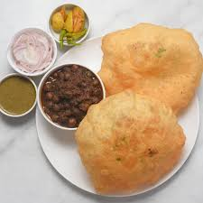

Favorite Recipes

Ras Malai Recipe
Ingredients:
- 1 liter full-fat milk
- 1/2 cup sugar
- 1/4 tsp cardamom powder
- 10-12 saffron strands
- 1/2 cup paneer (cottage cheese)
- Chopped pistachios and almonds for garnish
Instructions:
- Boil milk in a pan and simmer for 10 minutes. Add sugar, saffron, and cardamom powder, and stir until sugar dissolves. Let it cool.
- Knead paneer until smooth. Make small, flat round balls.
- Add the paneer balls into the prepared syrup and refrigerate for 2-3 hours.
- Garnish with pistachios and almonds before serving.

Chole Bhature Recipe
Ingredients:
- 1 cup chickpeas (soaked overnight)
- 2 tbsp oil
- 1 onion (finely chopped)
- 2 tomatoes (pureed)
- 1 tsp ginger-garlic paste
- 1 tsp chole masala
- 1 tsp cumin seeds
- 1 tsp turmeric powder
- Salt to taste
Instructions:
- Boil soaked chickpeas with salt until soft.
- In a pan, heat oil, add cumin seeds, and sauté onions till golden.
- Add ginger-garlic paste, tomato puree, and spices. Cook till oil separates.
- Add boiled chickpeas and simmer for 10 minutes. Garnish with coriander.

Chocolate Ice Cream Recipe
Ingredients:
- 2 cups heavy cream
- 1 cup sweetened condensed milk
- 1/2 cup cocoa powder
- 1 tsp vanilla extract
- 1/2 cup chocolate chips (optional)
Instructions:
- Whip the heavy cream until stiff peaks form.
- In a separate bowl, mix condensed milk, cocoa powder, and vanilla extract.
- Gently fold the whipped cream into the chocolate mixture.
- Add chocolate chips if desired.
- Pour the mixture into a container and freeze for 6-8 hours.
Contact Me
Favorite Cuisine

Indian Cuisine is my favorite, filled with bold flavors and spices that bring out the taste of our rich culture!